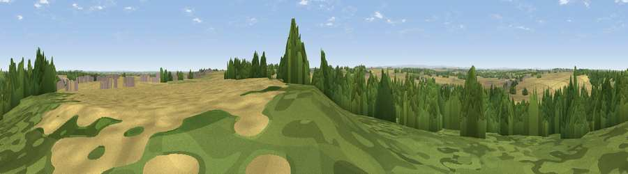

Viewpoint near Wentbridge
#21819 in England · top 35% of its area beats it · near WentbridgeThe view, rendered

A 360° render of this exact spot computed from the terrain model, tree cover and land cover — summer colours, afternoon light, calibrated against photographs of famous viewpoints. Real trees, hedges and buildings will differ in detail.
The panorama
Grey silhouette: terrain skyline in each direction (720 bearings, Earth curvature and refraction included). Dashed green: skyline with trees (+15 m) and buildings (+8 m) as obstacles. Blue strip: how far the ground is visible on each bearing.
Where the view opens
Wedge length = distance to the farthest visible ground on that bearing (vegetation-aware). Rings at 10, 25 and 50 km.
What fills the view
53% cropland · 33% woodland · 12% grassland · 3% built-up
Angular shares of the visible panorama (visual magnitude), not map area. Landscape diversity 0.46 (0–1 Shannon).
Key numbers
More beautiful places nearby
The staircase of upgrades: each row has a higher view potential than everything closer. Driving times are estimates from straight-line distance, calibrated against real road routing — check an actual route before setting out.
| Place | Direction | Drive | Score |
|---|---|---|---|
| Upton Beacon | SSW · 3 km | ~7 min | 52.3 |
| Viewpoint near Hampole | SSE · 5 km | ~12 min | 53.9 |
| Viewpoint near Pontefract | NW · 7 km | ~15 min | 58.0 |
| Viewpoint near Whitley | NE · 7 km | ~15 min | 62.7 |
| Gale Common | NE · 8 km | ~15 min | 64.2 |
| Viewpoint near Micklefield | NNW · 16 km | ~29 min | 65.7 |
| Viewpoint near Woolley | WSW · 17 km | ~30 min | 67.9 |
| Hoyland Lowe | SW · 20 km | ~33 min | 68.7 |
53.64164, -1.26599 · source: screening · position refined by local search. Computed location — check access rights before visiting.